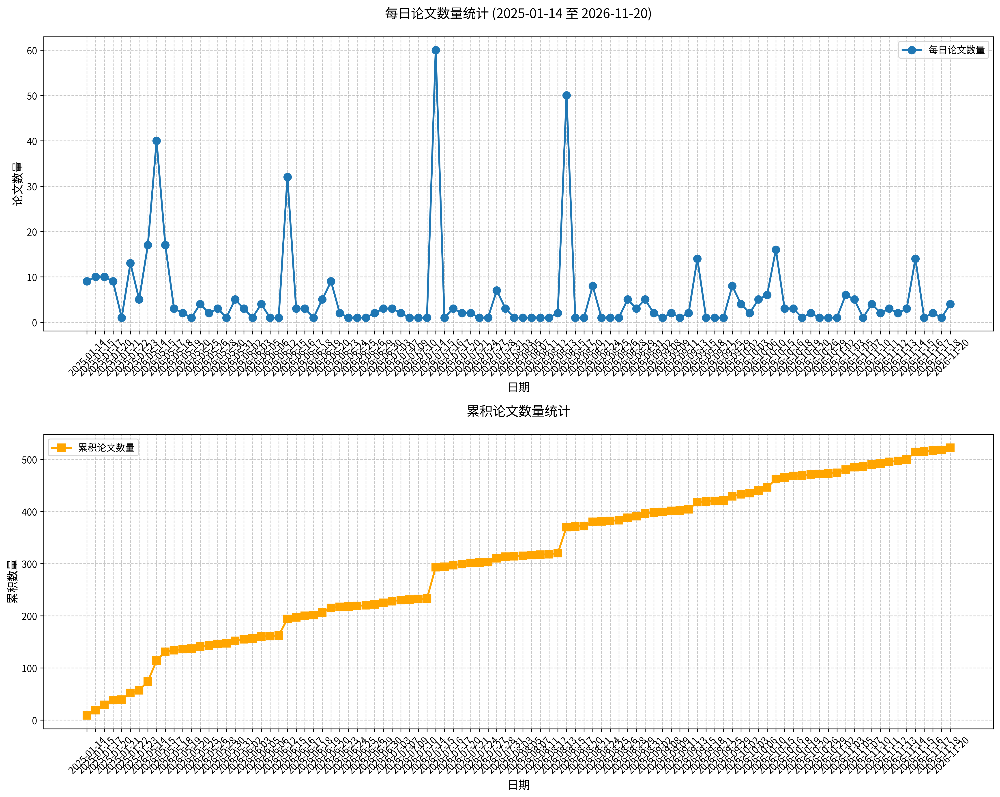

原文标题： Avoiding spiders: Affective context shapes tactile sensitivity during movement.
摘要： 触觉敏感性在自主运动过程中通常会降低，这一现象被称为触觉抑制。尽管已知情感背景能够调节触觉加工，但其如何影响触觉抑制仍不清楚。在一项虚拟现实（VR）环境中，我们研究了在回避威胁性刺激（蜘蛛）或接近非威胁性刺激（兔子）的运动过程中的触觉敏感性，涉及手臂屈曲或伸展以及肢体静息状态（基线）。触觉敏感性通过VR控制器传递的短暂振动来测量。运动过程中的检测阈值高于基线，证实了触觉抑制的存在。情感背景和运动类型均调节了抑制效应：回避威胁性刺激和伸展手臂各自均增强了抑制。一项使用中性几何物体的控制实验显示，手臂伸展和屈曲时的触觉敏感性相似。这些发现表明，情感背景在运动过程中塑造了触觉抑制。
关键词： 触觉抑制；情感背景；运动；威胁回避；虚拟现实
论文链接： PubMed
原文标题： Distinct neural oscillatory patterns underlying music-evoked emotions: Evidence from MEG and subjective reports.
摘要： 音乐具有强大的情绪诱发能力。本研究探讨了音乐诱发的愉快与不愉快情绪在神经与主观层面的相关特征。30名志愿者（15名女性）聆听了来自电影音乐刺激集（FMSS）的60段电影音乐片段（30段不愉快、30段愉快），同时使用脑磁图（MEG）记录其神经活动。参与者采用九点李克特量表对享乐效价、情绪唤醒度、快乐、恐惧和音乐偏好进行自我报告。结果显示，与不愉快音乐相比，愉快音乐被评定为更愉快、更快乐且更受偏好，而不愉快音乐被评定为唤醒度更高并诱发更高水平的恐惧。神经活动显示，愉快音乐在theta和beta频段具有更大的源水平振荡功率，并呈现不同的脑区模式。这些发现加深了对音乐诱发情绪的理解，并提示其在治疗心境障碍和情绪失调方面的潜在临床应用价值。
关键词： 音乐诱发情绪；脑磁图；神经振荡；情绪效价；情绪唤醒
论文链接： PubMed
原文标题： Examining the role of emotion regulation, anger, and anxiety in misophonia: A network model
摘要： 背景：恐音症以对特定声音产生强烈负面反应为特征，并与显著的情绪困扰相关。恐音症严重程度与情绪调节、焦虑和愤怒等因素之间的联系仍不明确。本研究采用网络分析来阐明具有自我报告恐音症症状的成年人中的这些关系，识别关键干预靶点和驱动症状严重程度的过程。方法：一个有恐音症症状和功能损害的成年人社区样本（N=205）完成了心理测量学验证的自我报告量表，包括杜克恐音症问卷（DMQ）、恐音症问卷（MQ），以及情绪调节、焦虑和愤怒的评估。进行网络分析以识别恐音症严重程度、焦虑、愤怒和情绪调节成分之间的关联。使用中心性指数评估网络中影响力最大的因素，并采用社区检测来探索潜在的聚类。结果：恐音症严重程度与情绪觉察、不接纳、焦虑和愤怒的关联最强。网络分析显示，代表情绪调节策略、不接纳和冲动性的节点具有最高的中心性和期望影响值，表明它们在整体网络中具有重要作用。社区检测识别出两个不同的聚类：一个反映情绪失调与恐音症，另一个与情绪清晰度和觉察有关。结论：本研究强调了不接纳、情绪觉察、愤怒和焦虑在理解恐音症严重程度中的重要性。针对愤怒、焦虑和不接纳的干预措施可能在管理恐音症症状方面最为有效。未来研究应纵向探索这些关系，以更好地指导治疗方法。
关键词： 恐音症；情绪调节；焦虑；愤怒；网络分析
论文链接： Crossref
原文标题： Smile Through Your Fear and Sadness
摘要： 动物交流信号已适应其环境的进化压力，这一点已被充分证实。例如，大象的低频发声适用于长距离通信，而鸟类的高频颤音则适应其更为局域化的声学生态位。与声音类似，人类面部传递着关于传递者内部情绪状态的社会信号。本文探讨两个主要问题：首先，我们刻画了 signaling 六种普遍情绪表达（快乐、悲伤、恐惧、厌恶、愤怒和惊讶）的面部特征的光谱组成。基于这些分析，我们随后预测并检验了情绪信号在不同观看距离下传递的有效性。我们揭示了识别率随观看距离变化的梯度，这约束了面部情绪表达相对的适应性效用（远端表达在广泛观看距离范围内是良好信号；近端表达适合更近距离的沟通）。
关键词： 面部表情；情绪信号；光谱组成；观看距离；适应性效用
论文链接： Crossref
